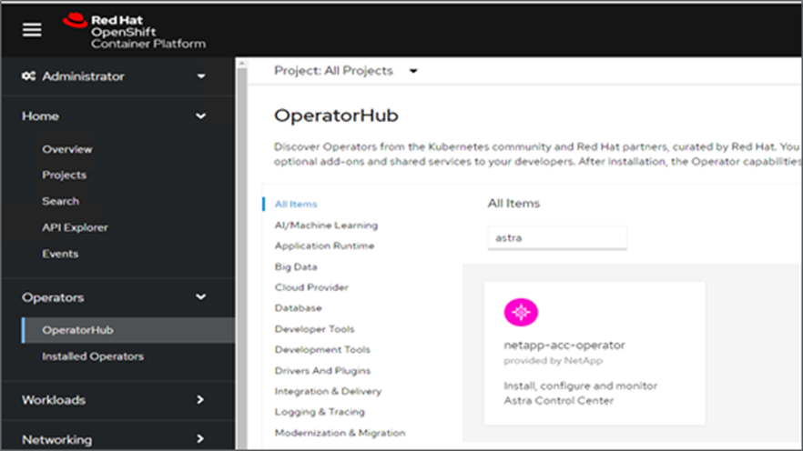
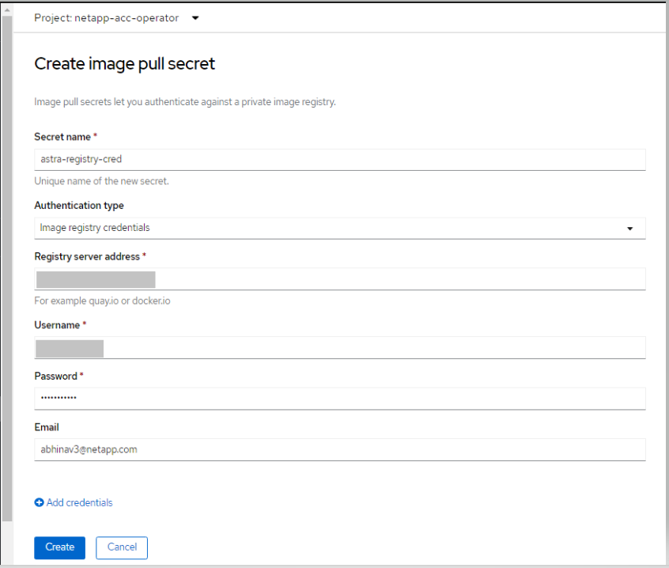
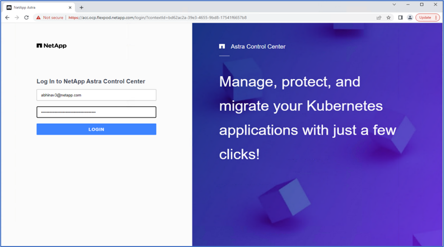
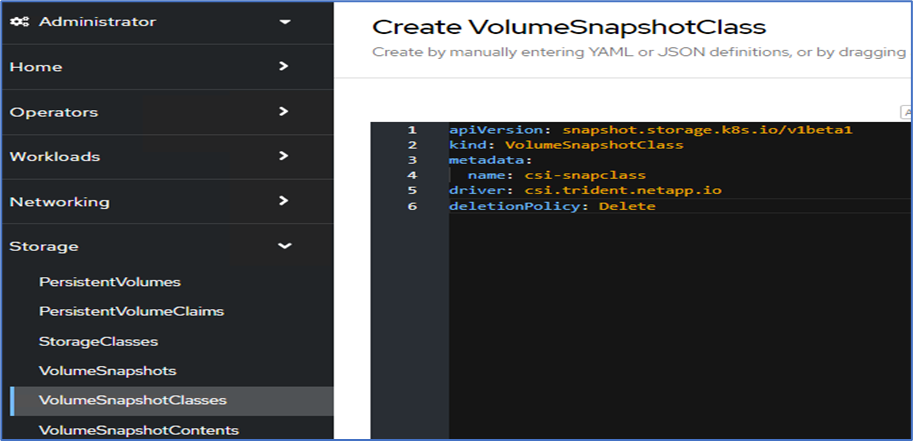
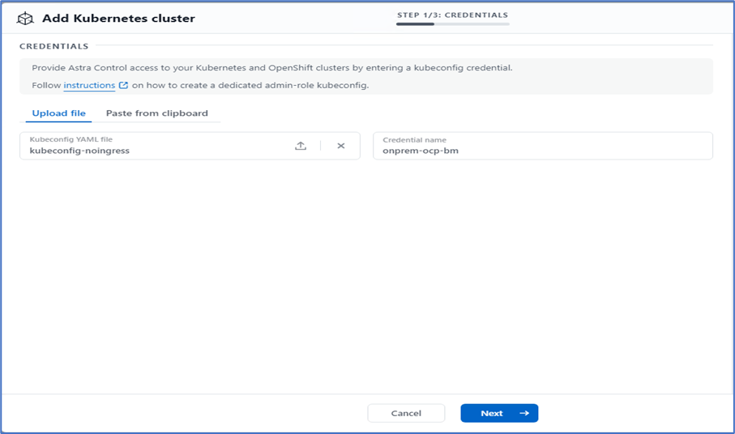
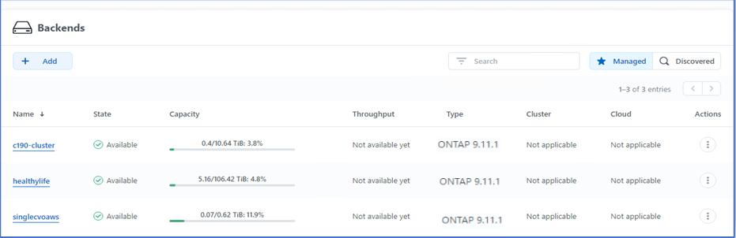
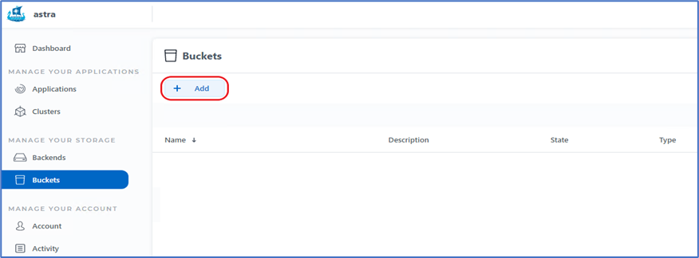

FlexPod-Definition
FlexPod-Definition
Astra Control Center-Installation auf OpenShift Container Platform
 Änderungen vorschlagen
Änderungen vorschlagen
Sie können Astra Control Center entweder auf OpenShift-Cluster auf FlexPod oder auf AWS mit einem Cloud Volumes ONTAP-Storage-Backend installieren. In dieser Lösung wird Astra Control Center auf dem Bare-Metal-Cluster OpenShift implementiert.
Astra Control Center kann mit dem beschriebenen Standardprozess installiert werden "Hier" Oder über den Red hat OpenShift OperatorHub. Astra Control Operator ist ein Red hat zertifizierter Operator. In dieser Lösung wird Astra Control Center mit dem Red hat OperatorHub installiert.
Umgebungsanforderungen
-
Astra Control Center unterstützt mehrere Kubernetes-Distributionen. Für Red hat OpenShift sind die unterstützten Versionen die Red hat OpenShift Container Platform 4.8 oder 4.9.
-
Astra Control Center benötigt zusätzlich zu den Anforderungen der Anwendungsressourcen der Umgebung und des Endbenutzers folgende Ressourcen:
| Komponenten | Anforderungen |
|---|---|
Storage-Back-End-Kapazität |
Mindestens 500 GB verfügbar |
Worker-Nodes |
Mindestens 3 Worker-Nodes mit 4 CPU-Kernen und 12 GB RAM |
Vollständig qualifizierte Domänenname (FQDN)-Adresse |
Eine FQDN-Adresse für Astra Control Center |
Astra Trident |
Astra Trident 21.04 oder höher ist installiert und konfiguriert |
Eingangs-Controller oder Load-Balancer |
Konfigurieren Sie den Ingress-Controller so, dass Astra Control Center mit einer URL oder einem Load-Balancer zur Bereitstellung von IP-Adressen bereitgestellt wird, die sich auf den FQDN beziehen |
-
Sie benötigen eine bereits vorhandene private Bildregistrierung, in die Sie die Astra Control Center-Bilder übertragen können. Sie müssen die URL der Bildregistrierung angeben, in der Sie die Bilder hochladen.

|
Einige Images werden bei der Ausführung bestimmter Workflows entfernt und Container werden bei Bedarf erstellt und zerstört. |
-
Astra Control Center erfordert, dass eine Storage-Klasse erstellt und als Standard-Storage-Klasse eingestellt wird. Astra Control Center unterstützt die folgenden ONTAP-Treiber von Astra Trident:
-
ontap-nas
-
ontap-nas-Flexgroup
-
ontap-san
-
ontap-san-Ökonomie
-
|
|
Astra Trident ist in den implementierten OpenShift-Clustern mit einem ONTAP-Back-End installiert und konfiguriert. Außerdem wird eine Standard-Storage-Klasse definiert. |
-
Zum Klonen von Applikationen in OpenShift-Umgebungen muss das Astra Control Center OpenShift erlauben, Volumes anzuhängen und die Eigentümerschaft von Dateien zu ändern. Um die ONTAP Exportrichtlinie zu ändern, um diese Vorgänge zu ermöglichen, führen Sie die folgenden Befehle aus:
export-policy rule modify -vserver <storage virtual machine name> -policyname <policy name> -ruleindex 1 -superuser sys export-policy rule modify -vserver <storage virtual machine name> -policyname <policy name> -ruleindex 1 -anon 65534
|
|
Wenn Sie eine zweite OpenShift-Betriebsumgebung als gemanagte Computing-Ressource hinzufügen möchten, stellen Sie sicher, dass die Astra Trident Volume Snapshot-Funktion aktiviert ist. Lesen Sie den offiziellen Abschnitt zum Aktivieren und Testen von Volume-Snapshots mit Astra Trident "Astra Trident Anweisungen". |
-
A "VolumeSnapClass" Sollte auf allen Kubernetes-Clustern konfiguriert werden, von denen die Applikationen gemanagt werden. Dazu könnte auch der K8s-Cluster gehören, auf dem Astra Control Center installiert ist. Astra Control Center kann Anwendungen auf dem K8s-Cluster verwalten, auf dem es ausgeführt wird.
Anforderungen für das Applikationsmanagement
-
Lizenzierung. um Anwendungen mit Astra Control Center zu verwalten, benötigen Sie eine Astra Control Center-Lizenz.
-
Namesaces. Ein Namespace ist die größte Instanz, die von Astra Control Center als Anwendung verwaltet werden kann. Sie können Komponenten anhand der Anwendungsbezeichnungen und benutzerdefinierten Beschriftungen in einem bestehenden Namespace herausfiltern und als Anwendung eine Untermenge von Ressourcen verwalten.
-
StorageClass. Wenn Sie eine Anwendung mit einem explizit eingestellten StorageClass installieren und die Anwendung klonen müssen, muss das Zielcluster für den Klonvorgang die ursprünglich angegebene StorageClass haben. Klonen einer Applikation, deren StorageClass explizit auf Cluster festgelegt ist, die nicht dieselbe StorageClass aufweisen, schlägt fehl.
-
Kubernetes-Ressourcen. Applikationen, die Kubernetes-Ressourcen nutzen, die nicht von Astra Control erfasst sind, verfügen möglicherweise nicht über umfassende Datenmanagementfunktionen für Applikationen. Astra Control kann die folgenden Kubernetes-Ressourcen erfassen:
| Kubernetes-Ressourcen | ||
|---|---|---|
ClusterCole |
ClusterrollenBding |
Konfigmap |
KundenressourcenDefinition |
Benutzerressource |
Kronjob |
DemonSet |
Horizon PodAutoscaler |
Eindringen |
BereitstellungConfig |
MutatingWebhook |
PersistentVolumeClaim |
Pod |
PodDisruptionBudget |
PodTemplate |
Netzwerkrichtlinie |
ReplicaSet |
Rolle |
Rollenverschwarten |
Route |
Geheim |
ValidierenWebhook |
Installieren Sie Astra Control Center mit OpenShift OperatorHub
Das folgende Verfahren installiert Astra Control Center mithilfe des Red hat OperatorHub. In dieser Lösung ist Astra Control Center auf einem Bare-Metal OpenShift Cluster installiert, das unter FlexPod ausgeführt wird.
-
Laden Sie das Astra Control Center Bundle herunter (
astra-control-center-[version].tar.gz) Vom "NetApp Support Website". -
Laden Sie die .zip-Datei für die Astra Control Center-Zertifikate und -Schlüssel aus dem herunter "NetApp Support Website".
-
Überprüfen Sie die Signatur des Bundles.
openssl dgst -sha256 -verify astra-control-center[version].pub -signature <astra-control-center[version].sig astra-control-center[version].tar.gz
-
Extrahieren Sie die Astra-Bilder.
tar -vxzf astra-control-center-[version].tar.gz
-
Wechseln Sie in das Astra-Verzeichnis.
cd astra-control-center-[version]
-
Fügen Sie die Bilder Ihrer lokalen Registrierung hinzu.
For Docker: docker login [your_registry_path]OR For Podman: podman login [your_registry_path]
-
Verwenden Sie das entsprechende Skript, um die Bilder zu laden, die Bilder zu kennzeichnen und sie in Ihre lokale Registrierung zu übertragen.
Für Docker:
export REGISTRY=[Docker_registry_path] for astraImageFile in $(ls images/*.tar) ; do # Load to local cache. And store the name of the loaded image trimming the 'Loaded images: ' astraImage=$(docker load --input ${astraImageFile} | sed 's/Loaded image: //') astraImage=$(echo ${astraImage} | sed 's!localhost/!!') # Tag with local image repo. docker tag ${astraImage} ${REGISTRY}/${astraImage} # Push to the local repo. docker push ${REGISTRY}/${astraImage} doneFür Podman:
export REGISTRY=[Registry_path] for astraImageFile in $(ls images/*.tar) ; do # Load to local cache. And store the name of the loaded image trimming the 'Loaded images: ' astraImage=$(podman load --input ${astraImageFile} | sed 's/Loaded image(s): //') astraImage=$(echo ${astraImage} | sed 's!localhost/!!') # Tag with local image repo. podman tag ${astraImage} ${REGISTRY}/${astraImage} # Push to the local repo. podman push ${REGISTRY}/${astraImage} done -
Melden Sie sich bei der Bare-Metal OpenShift Cluster Webkonsole an. Wählen Sie im Menü „Seite“ die Option „Operatoren“ > „OperatorHub“. Eingabe
astraUm die aufzulistennetapp-acc-operator.
netapp-acc-operatorIst ein zertifizierter Red hat OpenShift Operator und ist im OperatorHub-Katalog aufgeführt. -
Wählen Sie
netapp-acc-operatorUnd klicken Sie auf Installieren.
-
Wählen Sie die entsprechenden Optionen aus, und klicken Sie auf Installieren.

-
Genehmigen Sie die Installation, und warten Sie, bis der Bediener installiert ist.

-
In dieser Phase ist der Bediener erfolgreich installiert und betriebsbereit. Klicken Sie auf Ansichtsverwalter, um die Installation des Astra Control Centers zu starten.

-
Erstellen Sie vor der Installation von Astra Control Center das Pull Secret, um Astra-Bilder aus der Docker-Registry, die Sie früher verschoben haben, herunterzuladen.

-
Damit Sie die Astra Control Center-Bilder von Ihrer privaten Docker-Repo abrufen können, sollten Sie im ein Geheimnis schaffen
netapp-acc-operatorNamespace. Dieser geheime Name wird in einem späteren Schritt im Astra Control Center YAML-Manifest angegeben.
-
Wählen Sie im Seitenmenü Operatoren > Installed Operators aus, und klicken Sie im Abschnitt bereitgestellte APIs auf Create Instance.

-
Füllen Sie das Formular AstraControlCenter erstellen aus. Geben Sie den Namen, die Astra-Adresse und die Astra-Version an.

Geben Sie unter Astra Address die FQDN-Adresse für Astra Control Center an. Diese Adresse wird für den Zugriff auf die Astra Control Center Webkonsole verwendet. Der FQDN sollte auch in einem erreichbaren IP-Netzwerk auflösen und im DNS konfiguriert werden. -
Geben Sie einen Kontonamen, eine E-Mail-Adresse, einen Administrator-Nachnamen ein, und behalten Sie die standardmäßige Richtlinie zur Rückgewinnung von Volumes bei. Wenn Sie einen Load Balancer verwenden, setzen Sie den Ingress-Typ auf
AccTraefik. Wählen Sie andernfalls Generic für ausIngress.Controller. Geben Sie unter Image Registry den Registry-Pfad für das Container-Image und den geheimen Schlüssel ein.
In dieser Lösung wird der Metallb Load Balancer eingesetzt. Daher ist der Eingangstyp AccTraefik. Das Astra Control Center Trafik Gateway wird damit als Kubernetes Service des Typ Load Balancer bereitgestellt. -
Geben Sie den Vornamen des Administrators ein, konfigurieren Sie die Skalierung von Ressourcen und stellen Sie die Storage-Klasse bereit. Klicken Sie auf Erstellen .

Der Status der Astra Control Center-Instanz sollte von „Bereitstellen“ auf „bereit“ geändert werden.

-
Überprüfen Sie, ob alle Systemkomponenten erfolgreich installiert wurden und alle Pods ausgeführt werden.
root@abhinav-ansible# oc get pods -n netapp-acc-operator NAME READY STATUS RESTARTS AGE acc-helm-repo-77745b49b5-7zg2v 1/1 Running 0 10m acc-operator-controller-manager-5c656c44c6-tqnmn 2/2 Running 0 13m activity-589c6d59f4-x2sfs 1/1 Running 0 6m4s api-token-authentication-4q5lj 1/1 Running 0 5m26s api-token-authentication-pzptd 1/1 Running 0 5m27s api-token-authentication-tbtg6 1/1 Running 0 5m27s asup-669df8d49-qps54 1/1 Running 0 5m26s authentication-5867c5f56f-dnpp2 1/1 Running 0 3m54s bucketservice-85495bc475-5zcc5 1/1 Running 0 5m55s cert-manager-67f486bbc6-txhh6 1/1 Running 0 9m5s cert-manager-cainjector-75959db744-4l5p5 1/1 Running 0 9m6s cert-manager-webhook-765556b869-g6wdf 1/1 Running 0 9m6s cloud-extension-5d595f85f-txrfl 1/1 Running 0 5m27s cloud-insights-service-674649567b-5s4wd 1/1 Running 0 5m49s composite-compute-6b58d48c69-46vhc 1/1 Running 0 6m11s composite-volume-6d447fd959-chnrt 1/1 Running 0 5m27s credentials-66668f8ddd-8qc5b 1/1 Running 0 7m20s entitlement-fd6fc5c58-wxnmh 1/1 Running 0 6m20s features-756bbb7c7c-rgcrm 1/1 Running 0 5m26s fluent-bit-ds-278pg 1/1 Running 0 3m35s fluent-bit-ds-5pqc6 1/1 Running 0 3m35s fluent-bit-ds-8l7cq 1/1 Running 0 3m35s fluent-bit-ds-9qbft 1/1 Running 0 3m35s fluent-bit-ds-nj475 1/1 Running 0 3m35s fluent-bit-ds-x9pd8 1/1 Running 0 3m35s graphql-server-698d6f4bf-kftwc 1/1 Running 0 3m20s identity-5d4f4c87c9-wjz6c 1/1 Running 0 6m27s influxdb2-0 1/1 Running 0 9m33s krakend-657d44bf54-8cb56 1/1 Running 0 3m21s license-594bbdc-rghdg 1/1 Running 0 6m28s login-ui-6c65fbbbd4-jg8wz 1/1 Running 0 3m17s loki-0 1/1 Running 0 9m30s metrics-facade-75575f69d7-hnlk6 1/1 Running 0 6m10s monitoring-operator-65dff79cfb-z78vk 2/2 Running 0 3m47s nats-0 1/1 Running 0 10m nats-1 1/1 Running 0 9m43s nats-2 1/1 Running 0 9m23s nautilus-7bb469f857-4hlc6 1/1 Running 0 6m3s nautilus-7bb469f857-vz94m 1/1 Running 0 4m42s openapi-8586db4bcd-gwwvf 1/1 Running 0 5m41s packages-6bdb949cfb-nrq8l 1/1 Running 0 6m35s polaris-consul-consul-server-0 1/1 Running 0 9m22s polaris-consul-consul-server-1 1/1 Running 0 9m22s polaris-consul-consul-server-2 1/1 Running 0 9m22s polaris-mongodb-0 2/2 Running 0 9m22s polaris-mongodb-1 2/2 Running 0 8m58s polaris-mongodb-2 2/2 Running 0 8m34s polaris-ui-5df7687dbd-trcnf 1/1 Running 0 3m18s polaris-vault-0 1/1 Running 0 9m18s polaris-vault-1 1/1 Running 0 9m18s polaris-vault-2 1/1 Running 0 9m18s public-metrics-7b96476f64-j88bw 1/1 Running 0 5m48s storage-backend-metrics-5fd6d7cd9c-vcb4j 1/1 Running 0 5m59s storage-provider-bb85ff965-m7qrq 1/1 Running 0 5m25s telegraf-ds-4zqgz 1/1 Running 0 3m36s telegraf-ds-cp9x4 1/1 Running 0 3m36s telegraf-ds-h4n59 1/1 Running 0 3m36s telegraf-ds-jnp2q 1/1 Running 0 3m36s telegraf-ds-pdz5j 1/1 Running 0 3m36s telegraf-ds-znqtp 1/1 Running 0 3m36s telegraf-rs-rt64j 1/1 Running 0 3m36s telemetry-service-7dd9c74bfc-sfkzt 1/1 Running 0 6m19s tenancy-d878b7fb6-wf8x9 1/1 Running 0 6m37s traefik-6548496576-5v2g6 1/1 Running 0 98s traefik-6548496576-g82pq 1/1 Running 0 3m8s traefik-6548496576-psn49 1/1 Running 0 38s traefik-6548496576-qrkfd 1/1 Running 0 2m53s traefik-6548496576-srs6r 1/1 Running 0 98s trident-svc-679856c67-78kbt 1/1 Running 0 5m27s vault-controller-747d664964-xmn6c 1/1 Running 0 7m37s
Jeder Pod sollte den Status „laufen“ aufweisen. Es kann mehrere Minuten dauern, bevor die System-Pods implementiert sind. -
Wenn alle Pods ausgeführt werden, führen Sie den folgenden Befehl aus, um das einmalige Passwort abzurufen. Prüfen Sie in der YAML-Version der Ausgabe das
status.deploymentStateFeld für den bereitgestellten Wert, und kopieren Sie anschließend diestatus.uuidWert: Das Passwort lautetACC-Anschließend der UUID-Wert. (ACC-[UUID]).root@abhinav-ansible# oc get acc -o yaml -n netapp-acc-operator
-
Navigieren Sie in einem Browser zur URL mithilfe des FQDN, den Sie bereitgestellt haben.
-
Melden Sie sich mit dem Standardbenutzernamen an. Dies ist die E-Mail-Adresse, die während der Installation angegeben wurde, und das einmalige Passwort ACC-[UUID].

Wenn Sie dreimal ein falsches Kennwort eingeben, ist das Administratorkonto 15 Minuten lang gesperrt. -
Ändern Sie das Passwort, und fahren Sie fort.

Weitere Informationen zur Installation des Astra Control Center finden Sie im "Astra Control Center – Übersicht über die Installation" Seite.
Einrichten des Astra Control Center
Melden Sie sich nach der Installation von Astra Control Center in der UI an, laden Sie die Lizenz hoch, fügen Sie Cluster hinzu, managen Sie den Storage und fügen Sie Buckets hinzu.
-
Gehen Sie auf der Homepage unter Konto auf die Registerkarte Lizenz und wählen Sie Lizenz hinzufügen, um die Astra-Lizenz hochzuladen.

-
Erstellen Sie vor dem Hinzufügen des OpenShift-Clusters über die OpenShift-Webkonsole einen Astra Trident Volume Snapshot. Die Klasse Volume Snapshot wird mit dem konfiguriert
csi.trident.netapp.ioTreiber.
-
Zum Hinzufügen des Kubernetes-Clusters wechseln Sie auf der Startseite zu Clusters und klicken auf Kubernetes-Cluster hinzufügen. Laden Sie anschließend die hoch
kubeconfigDatei für den Cluster und geben einen Namen für die Anmeldeinformationen an. Klicken Sie Auf Weiter.
-
Die vorhandenen Speicherklassen werden automatisch erkannt. Wählen Sie die Standard-Storage-Klasse aus, klicken Sie auf Weiter und klicken Sie dann auf Cluster hinzufügen.

-
Der Cluster wird in wenigen Minuten hinzugefügt. Um weitere Cluster der OpenShift Container Platform hinzuzufügen, wiederholen Sie die Schritte 1 bis 4.
Wenn Sie eine zusätzliche OpenShift-Betriebsumgebung als verwaltete Computing-Ressource hinzufügen möchten, sollten Sie den Astra Trident in die Umgebung einbinden "VolumeSnapshotClass-Objekte" Werden definiert. -
Um den Speicher zu verwalten, gehen Sie zu Backend, klicken Sie auf die drei Punkte unter Aktionen gegen das Backend, das Sie verwalten möchten. Klicken Sie Auf Verwalten.

-
Geben Sie die ONTAP Zugangsdaten ein und klicken Sie auf Weiter. Überprüfen Sie die Informationen, und klicken Sie auf verwaltet. Die Back-Ends sollten wie im folgenden Beispiel aussehen.

-
Um Astra Control einen Bucket hinzuzufügen, wählen Sie Eimer aus, und klicken Sie auf Hinzufügen.

-
Wählen Sie den Bucket-Typ aus und geben Sie den Bucket-Namen, den S3-Servernamen oder die IP-Adresse und S3-Zugangsdaten an. Klicken Sie Auf Aktualisieren.

In dieser Lösung werden AWS S3 und ONTAP S3 Buckets verwendet. Sie können auch StorageGRID verwenden. Der Bucket-Status sollte sich in einem ordnungsgemäßen Zustand befinden.

Im Rahmen der Kubernetes-Cluster-Registrierung mit Astra Control Center für applikationskonsistentes Datenmanagement erstellt Astra Control automatisch Rollenbindungen und einen NetApp Monitoring Namespace, mit dem Kennzahlen und Protokolle von den Applikations-Pods und den Worker-Nodes erfasst werden. Nutzen Sie als Standard eine der unterstützten ONTAP-basierten Storage-Klassen.
Nach Ihnen "Fügen Sie dem Astra Control Management einen Cluster hinzu", Sie können Apps auf dem Cluster installieren (außerhalb von Astra Control) und dann auf der Seite Apps in Astra Control die Apps und ihre Ressourcen verwalten. Weitere Informationen zum Verwalten von Apps mit Astra finden Sie im "Anforderungen für das Applikationsmanagement".